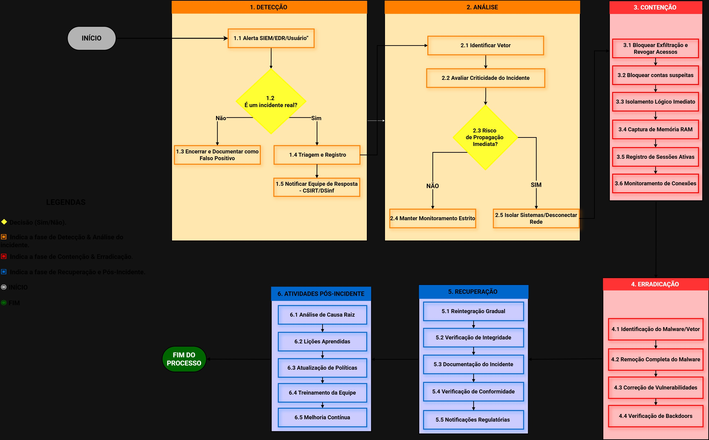

RESPOSTA A INCIDENTES - NIST
Comprometimento de Informações
FLUXOGRAMA GERAL

FASE 2.1: DETECÇÃO

Identificação do Incidente
- Sinais de Alerta
- Exfiltração de dados detectada pelo SIEM ou alertas de acesso anômalo em bancos de dados.
FASE 2.2: ANÁLISE

Triagem e Escopo
- Decisão LGPD Crítico
- Determinar se há Dados Pessoais envolvidos para acionar o DPO.
FASE 3: CONTENÇÃO

Interrupção do Vazamento
Foco em bloquear o canal de exfiltração e revogar credenciais comprometidas.
FASE 3.1: ERRADICAÇÃO

Remediação Final
Correção da vulnerabilidade explorada e remoção de persistência (backdoors).
FASE 4: RECUPERAÇÃO

Conformidade e Retorno
Validação de integridade e notificações regulatórias (ANPD/LGPD).
FASE 5: PÓS-INCIDENTE

Melhoria Contínua
Documentação de lições aprendidas e atualização de políticas.